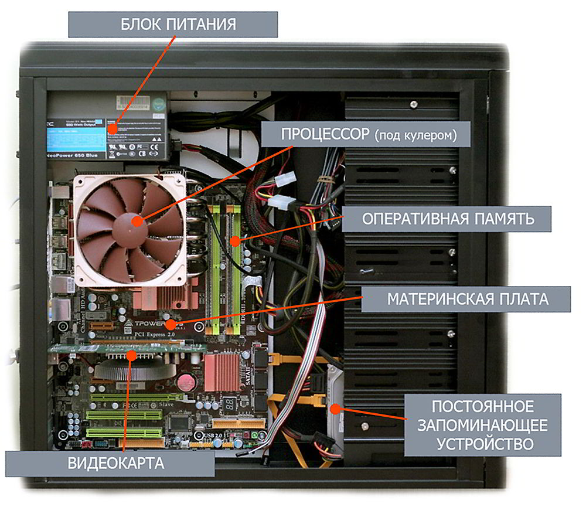

Современные персональные компьютеры
Современные ПК представляют собой компактные и мощные устройства, доступные каждому. Они сочетают высокую производительность с энергоэффективностью и эргономичным дизайном.
Характеристики современного ПК:
- Процессор: 8-16 ядер (Intel Core i7/i9, AMD Ryzen 7/9)
- Тактовая частота: 3.5-5.0 ГГц с турбо-режимом
- Оперативная память: 16-64 ГБ DDR4/DDR5
- Накопители: NVMe SSD 512 ГБ - 2 ТБ
- Видеокарта: NVIDIA RTX 3070-4090 или AMD RX 6700-7900
- Охлаждение: Системы жидкостного охлаждения
- Порты: USB-C, Thunderbolt 4, HDMI 2.1, Wi-Fi 6E
- Энергопотребление: 500-1000 Вт
Современные компьютеры поддерживают технологии искусственного интеллекта, трассировку лучей в реальном времени и работу с VR/AR. Благодаря компактным размерам, мощный ПК теперь можно разместить даже в небольшой комнате.
